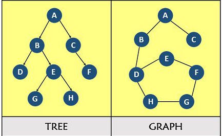

Breadth First Search (BFS) and Depth First Search (DFS)

BFS and DFS are two algorithms that traverse a graph or tree data structure. They traverse it in a systematic way, visiting all the nodes and edges.
They can be used to:
What are stacks and queue?
A stack and a queue are both data structures that are used to store and organize data. However, they have different properties and are used for different purposes.
A stack is a data structure that follows the principle of "last in, first out" (LIFO). This means that the last element that was added to the stack is the first one to be removed. Stacks are often used to store data temporarily and are used in a variety of applications, such as evaluating expressions, undo/redo operations, and function calls.
A queue is a data structure that follows the principle of "first in, first out" (FIFO). This means that the first element that was added to the queue is the first one to be removed. Queues are often used to store data that needs to be processed in a specific order, and are used in a variety of applications, such as scheduling tasks, handling events, and storing data for later processing.
Here are some key differences between stacks and queues:
pseudo
BFS(root):
create an empty queue q
create an empty set s
add root to q and s
while q is not empty:
dequeue a node n from q
for each neighbor m of n:
if m is not in s:
add m to s
add m to qAt the end of the algorithm, every nodes are explored and s will contain all the nodes of the graph.
If there are N nodes and E edges, the algorithm runs in O(E+N) since every nodes and edges are visited only once. Space is also O(E+N) because it stores the nodes that need to be visited and the size of the queue can be at most N+E.
# implementation of BFS algo in Python
from collections import deque
def BFS(root):
q = deque() # deque is a list-like sequence optimized for data accesses near its endpoint.
s = set()
q.append(root)
s.add(root)
while len(q) > 0:
n = q.popleft()
for m in n.neighbors:
if m not in s:
s.add(m)
q.append(m)
DFS(root):
create an empty stack s
create an empty set visited
add root to s and visited
while s is not empty:
pop a node n from s
for each neighbor m of n:
if m is not in visited:
add m to visited
add m to sAs for BFS, the time complexity is O(N+E) as you visit each node and edge only once. However the DFS space complexity can be O(N) if it is implemented iteratively (O(N+E) if implemented recursively because you need to store the nodes that are currently being visited in the stack, as well as the nodes and edges that has been visited.)
def DFS(root):
s = []
visited = set()
s.append(root)
visited.add(root)
while len(s) > 0:
n = s.pop()
for m in n.neighbors:
if m not in visited:
visited.add(m)
s.append(m)
We first create a function that create random graphs that will be useful to test our solutions.
import random
import networkx as nx # to visualize the graph
import matplotlib as plt
# create the graph
# Define a class for the nodes in the graph
class Node:
def __init__(self, value):
self.value = value
self.neighbors = set()
# class Random Graph
class Random_graph:
def __init__(self, size):
self.nodes = []
for i in range(size):
node = Node(str(i))
self.nodes.append(node)
# create random edges:
for i in range(size):
node = self.nodes[i]
num_neighbors = random.randint(1,size-1)
for j in range(num_neighbors):
neighbor = self.nodes[random.randint(0,size-1)]
if neighbor != node: # to avoid a node, to have an edge to itself
node.neighbors.add(neighbor)
neighbor.neighbors.add(node)
def visualize(self):
# Create a NetworkX graph from the given graph
G = nx.Graph()
# Add the nodes to the graph
for node in self.nodes:
G.add_node(node.value)
# Add the edges to the graph
for node in self.nodes:
for neighbor in node.neighbors:
G.add_edge(node.value, neighbor.value)
# Draw the graph
nx.draw(G, with_labels=True)
graph = Random_graph(6)
graph.visualize()
![]()
for i in graph.nodes[0].neighbors:
print(i.value)
5 3 1 2 0
To check if a node is in a graph, we just need to add a if condition to check if the node is the targeted node, return True if we meet the node, False otherwise.
I will implement the algorithms for the case where we search multiple nodes (and then the above case will just be a special case.)
# Using BFS
from collections import deque
def BFS_search(root, target_value):
# initialize the dictionary that stores the False as long as we havent seen the targeted value
sol = {}
for i in range(len(target_value)):
sol[target_value[i]] = False
q = deque([root]) # deque is a list-like sequence optimized for data accesses near its endpoint.
visited = set()
visited.add(root)
while len(q) > 0:
n = q.popleft()
for m in n.neighbors:
if m not in visited:
if m.value in target_value:
sol[m.value] = True
visited.add(m)
q.append(m)
# check if the value is in target_value
if False in sol.values():
return False
else:
return True
# applying the algorithm to the random graph of size 6
print(BFS_search(graph.nodes[0],["2","5"]))
print(BFS_search(graph.nodes[0],["2","5","7"]))
True False
We need to add to the standard BFS time complexity the time taken to initialize the dictionnary, which is O(Q) where Q is the lenght of the target_value list. We also need to add the time taken to check if the node is in the target_value list which take O(Q). So in total O((E+N)Q) which will be O(E+N) in general as Q will be very small compared to N or E.
For the space complexity we just need to add the space required to store the dictionnay which is negligable compared to the space required to store the queue.
We need to have a dictionnary that stores the distance of nodes as they are discovered from the root node. We use a dictionnary to be able to get the distance of any node from the root node in O(1)
print(BFS_shortest_path(graph.nodes[0],graph.nodes[5]))
print(BFS_shortest_path(graph.nodes[0],graph.nodes[4]))
1 3
A graph is bipartite if we can color all the nodes such that no node having the same color are directly connected by an edge.
We apply DFS as follow: start with a node and color the first one Red, then Blue, then Red, until we reach as deep as we can in the graph.
Explore the graph like above until either we find
True False
This was the opportunity for me to review two of the most famous and widely used algorithm, BFS and DFS and see some problems that can be solved using them.